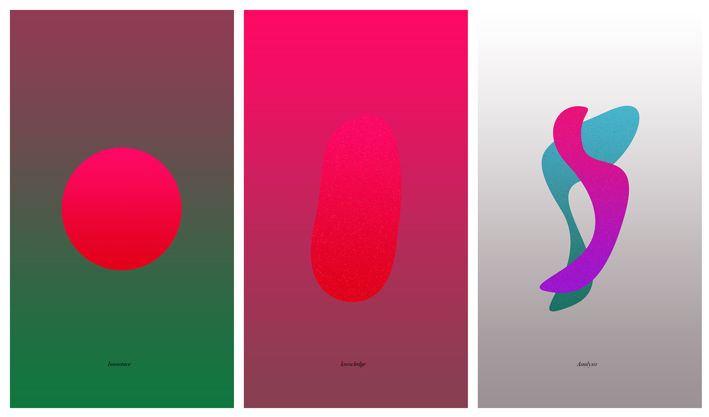

A small interaction exercise I did recently for the house search flow which was being used at nestaway's website. The main outline of this task was to make the flow look simple, connected and interactive. It's practicality and usefulness with the current design language is very low, but atleast it helped me better understand framer and coffeescript.
You can click on any of the city names or the city cards to get started!
Hybrid House Search Interface @nestaway
At nestaway we were struggling while deciding which view to use as a default view for the new users, who are searching for houses - Map view or List view?
Both of these are very common patterns which can be seen on real estate related wesbites. Map view shows a the houses within a geographic location plotted on a map of that location, where users can click the plotted links on the map to see details of that house. These are good for cases when a user is searching in a substantially big geo-location and the property's location is of the primary importance.
In a list view, houses are shown as a list, without any geographical context. This is good for granular search where the user has already - through the flow - set the search location small enough so that it no longer matters to them the precise location of the place, and they can just apply more filters and search precisely for what they are looking for.
Through our research we found that map view are quite popular and help users see wide variety of results, but their share to conversions is less than the List view - which was conterintuitive to me.
So I tried experimenting with a hybrid interface, where the geo-location is assisting the user in a less prominent way and whihc can parallaly compete with list view on the bsis of ease-of-use, where users can just scroll the list for scanning multiple items at the fastest pace.
Here you can see that the layout is a little different than the traditional layouts. The map is treated as a base layer, which provides geo-spatial context through out the search flow and stays in the background if not needed. The List is a layer which slided on top of this base when needed. If you scroll on the list (you might have to click and drag up on laptops/desktops) the list shifts and takes majority of the available space, limiting the map to only a small portion - good enough for setting the context.
If you click on the empty map area on the right edge, the map takes up majority space, which in a hi-fi version should work when the user clicks on any part of the map, which is empty.
If the user clicks on any of the dots - which represent the available results, the house preview opens up. Which also opens up when any of the house cards are clicked on - and by interacting with it, user is taken forward in that particular flow.
Let me know if you have any idea to make this interface better in any way possible, or if you have any opposing view too. Whatever make this interface better will help a lot.
Microinteraction for search box @nestaway
While experimenting with the landing page design, tried out this microinteraction to visualize how to integrate the quick search with the search box / locality search event. Where quick search provides users with an option to search houses in popular localities on the platform with a single click.
In the exixting flow they have to type the name of those localities in the search box - by themselves - and then select from the dropdown to select it. But due to high poularity of the loc, it's better to provide powerusers shortcuts.
Microinteraction for a file upload sequence
This was a part of the work I did for an offline app. This is a prototype for a microinteraction where a user uploads a document, and it is processed before providing the user with a downloadable file of the report generated on the date of the uploaded file.
You can click on upload-circle to see it work.While playing with SVGs created this pseudo-animation

visualizing a thought - 20/02/16SVG Gradient animationThree.js first trialThree.js second trialSame as the one above, but with masking enabled
{kind=link}